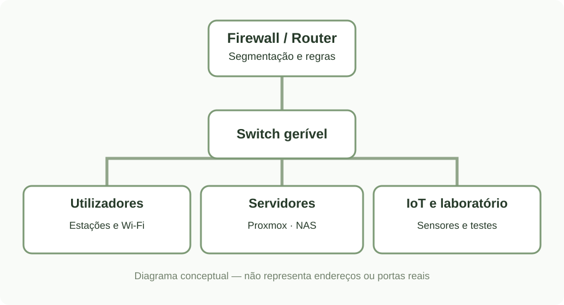
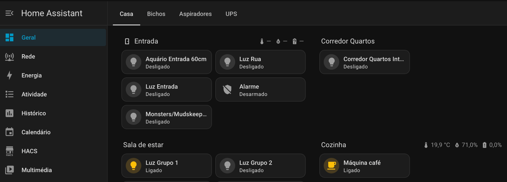
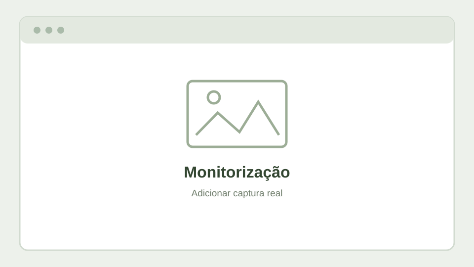

Visão geral
O Home Lab permite experimentar tecnologias utilizadas em ambientes reais, criar serviços de teste e aperfeiçoar processos de diagnóstico e manutenção. Integra sistemas de rede, virtualização, armazenamento e automação.

Componentes principais
Rede e segurança
Firewall, switches geríveis, segmentação por VLANs e pontos de acesso.
Explorar →Servidores e VMs
Máquinas virtuais, containers e serviços de laboratório.
Explorar →Automação
Home Assistant, Zigbee, MQTT e dispositivos domésticos.
Explorar →Painel de serviços
Acesso rápido aos serviços mais utilizados.
Explorar →Capturas do ambiente




Exemplo prático
Separar funções na infraestrutura
- Criar segmentos de rede distintos para equipamentos de utilização diária, servidores, dispositivos IoT e gestão.
- Aplicar regras de firewall adequadas a cada segmento.
- Monitorizar o estado dos serviços e manter backups das configurações importantes.